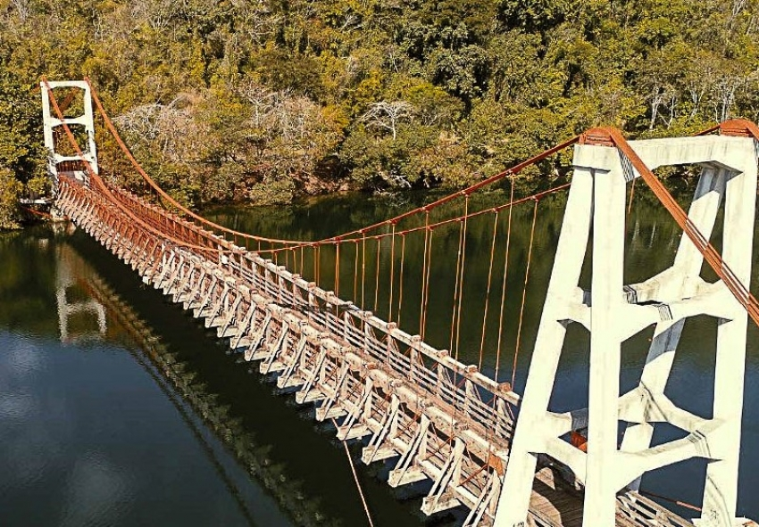

<!DOCTYPE html>
<html lang="pt-br">
</html>
<title>Ponte Pêncil Alves de Lima </title>
    <meta charset="UTF-8">
    <meta http-equiv="X-UA-Compatible" content="IE=egde">
    <meta name="viewport" content="width=device-width, initial-scale=1.0 ">
    <link rel="stylesheet" href="index.css">
 </head>

<body>
    <header>
        <div class="center">
          </img>
        </div>
        <h1>Ponte Pênsil Alves de Lima</h1>
      </header>
<main>
<section>
<p>
    A Ponte Pêncil Alves de Lima é uma das estruturas mais notáveis de Ribeirão Claro, no estado do Paraná. Esta ponte suspensa, que atravessa o rio Paranapanema, tem grande importância histórica, cultural e funcional para o município e as regiões vizinhas.

    A construção da Ponte Pêncil Alves de Lima foi concluída em 1918, durante um período de expansão e desenvolvimento da infraestrutura local. A ponte foi nomeada em homenagem a uma das famílias pioneiras da região, os Alves de Lima, que desempenharam um papel crucial no desenvolvimento econômico e social de Ribeirão Claro.
    
    Originalmente, a ponte foi construída para facilitar o transporte e o comércio entre Ribeirão Claro e outras cidades próximas, especialmente Carlópolis, localizada do outro lado do rio Paranapanema. Antes de sua construção, a travessia do rio era um grande desafio para os moradores e comerciantes, que dependiam de balsas e outros meios rudimentares.
    
    A Ponte Pêncil Alves de Lima, com seu design engenhoso e sua estrutura de suspensão, tornou-se rapidamente uma via crucial para a movimentação de pessoas, animais e mercadorias. Ela ajudou a impulsionar a economia local, promovendo o intercâmbio comercial e cultural entre as regiões.
    
    Além de sua importância prática, a ponte também se tornou um marco histórico e turístico. Sua construção em 1918 representa um período significativo de progresso e desenvolvimento para Ribeirão Claro. A estrutura oferece uma vista panorâmica impressionante do rio Paranapanema e da paisagem ao redor, atraindo turistas e entusiastas da engenharia.
    
    Com o passar dos anos, a Ponte Pêncil Alves de Lima passou por diversas reformas e manutenções para garantir sua segurança e funcionalidade. Hoje, ela continua a ser um importante meio de ligação entre comunidades, além de ser um patrimônio histórico que simboliza a engenhosidade e a determinação dos pioneiros de Ribeirão Claro.
    
    A Ponte Pêncil Alves de Lima é, portanto, muito mais do que uma simples travessia sobre o rio; ela é um testemunho da história e do desenvolvimento de Ribeirão Claro, celebrando a conexão entre as pessoas e a inovação tecnológica da época de sua construção.  
</p>
</section>
</main>


</body>